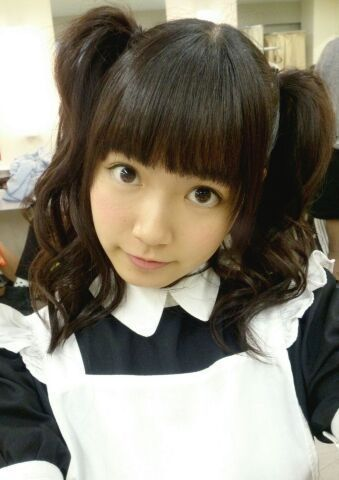

| 2014/01 25 Sat | ひめたん(*>ω<*)そ の400 |
祝400回(＊^O^＊)
大図鑑もカウントしたら
きっともうちょっと書いてるんだけど
そーゆー細かいことは今日はいいです！
いつもひめたんの日記を読んでくださって
ありがとうございます♪♪
忙しい中コメントもありがとーう！
ひめたんはコメント読んでると
みなさんとお話してるみたいでいつも楽しいです☆
これからも更新がんばりまーす
いっぱい遊びに来てねっ
いつでも待ってるからねヽ(´・ω・｀ヽ)
それでねーひめきゅんさんに
ささやかなお礼を込めて
名札作ってみたのー
だからプリントアウトして
握手会に持ってくるとか定期入れに入れるとかして
持ち歩いてくれたら嬉しいな(っ´ω`c)
自分の顔写真貼ってもいーんだよ！
ひめきゅんno.は何でもいいけど
例えばこの日記にコメント書いてみて
その反映された番号とかにしたら
みんなとかぶらなくていいんじゃないかな☆

NOGIBINGO!2は
妄想シチュエーションの回でしたー
詳しくはまた書きまーす＊＊
明日は乃木どこ！選抜発表！

(＊´・ω・＊)
コメント(1073)
2014/01/25 23:48